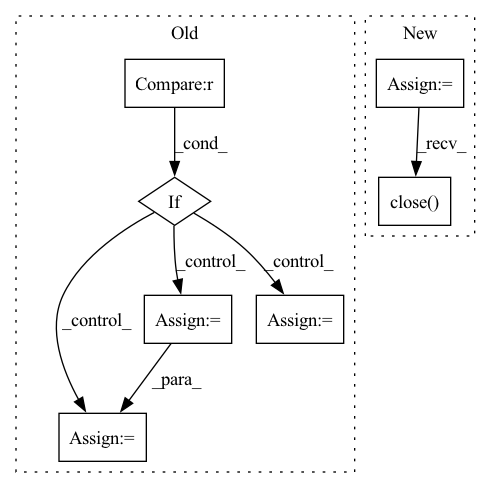

Pattern ID :16331

Before Change
venv_chans_first = make_vec_env(gym_env_name_chans_first,
n_envs=1,
parallel=False)
elif benchmark["benchmark_name"] == "dm_control":
gym_env_name_chans_first, dataset_dict = load_dataset_dm_control()
venv_chans_first = make_vec_env(gym_env_name_chans_first,
n_envs=1,
parallel=False)
elif benchmark["benchmark_name"] == "atari":
dataset_dict = load_dataset_atari()
gym_env_name_chans_last = benchmark["atari_env_id"]
venv_nhwc = VecFrameStack(make_atari_env(gym_env_name_chans_last), 4)
venv_chans_first = VecTransposeImage(venv_nhwc)
else:
raise NotImplementedError(
f"this code does not yet support "
After Change
log_dir = il_train_ex.observers[0].dir
imitation_logger.configure(log_dir, ["stdout", "tensorboard"])
venv = auto_env.load_vec_env()
dataset_dict = auto_env.load_dataset()
dataset = TransitionsMinimalDataset(dataset_dict)
if encoder_path:
logging.info(f"Loading pretrained encoder from "{encoder_path}"")
encoder = th.load(encoder_path)
else:
logging.info(f"No encoder provided, will init from scratch")
encoder = None
logging.info(f"Setting up "{algo}" IL algorithm")
if algo == "bc":
do_training_bc(dataset=dataset,
venv_chans_first=venv,
out_dir=log_dir,
encoder=encoder)
elif algo == "gail":
do_training_gail(dataset=dataset,
venv_chans_first=venv,
encoder=encoder)
else:
raise NotImplementedError(f"Can"t handle algorithm "{algo}"")
// FIXME(sam): make sure this always closes correctly, even when there"s an
// exception after creating it (could use try/catch or a context manager)
venv.close()
return log_dir
In pattern: SUPERPATTERN
Frequency: 3
Non-data size: 7
Instances
Fragment ID: 54783747
Project Name: humancompatibleai/eirli
Commit Name: e27cbb99e7f7a03a80d5ff8063b3071bf534edda
Time: 2020-08-13
Author: sam@qxcv.net
File Name: src/il_representations/scripts/il_train.py
M Class Name: AnonimousClass
N Class Name: AnonimousClass
M Method Name: train(5)
N Method Name: train(5)
M Parent Class:
N Parent Class:
M File Name: src/il_representations/scripts/il_train.py
N File Name: src/il_representations/scripts/il_train.py
M Start Line: 164
M End Line: 211
N Start Line: 158
N End Line: 187
'>
Before Change
venv_chans_first = make_vec_env(gym_env_name_chans_first,
n_envs=1,
parallel=False)
elif benchmark["benchmark_name"] == "atari":
dataset_dict = load_dataset_atari()
gym_env_name_chans_last = benchmark["atari_env_id"]
venv_nhwc = VecFrameStack(make_atari_env(gym_env_name_chans_last), 4)
venv_chans_first = VecTransposeImage(venv_nhwc)
else:
raise NotImplementedError(
After Change
log_dir = il_train_ex.observers[0].dir
imitation_logger.configure(log_dir, ["stdout", "tensorboard"])
venv = auto_env.load_vec_env()
dataset_dict = auto_env.load_dataset()
dataset = TransitionsMinimalDataset(dataset_dict)
if encoder_path:
logging.info(f"Loading pretrained encoder from "{encoder_path}"")
encoder = th.load(encoder_path)
else:
logging.info(f"No encoder provided, will init from scratch")
encoder = None
logging.info(f"Setting up "{algo}" IL algorithm")
if algo == "bc":
do_training_bc(dataset=dataset,
venv_chans_first=venv,
out_dir=log_dir,
encoder=encoder)
elif algo == "gail":
do_training_gail(dataset=dataset,
venv_chans_first=venv,
encoder=encoder)
else:
raise NotImplementedError(f"Can"t handle algorithm "{algo}"")
// FIXME(sam): make sure this always closes correctly, even when there"s an
// exception after creating it (could use try/catch or a context manager)
venv.close()
return log_dir
'>
Fragment ID: 54783748
Project Name: humancompatibleai/eirli
Commit Name: 4f43a9030853ed574d23f2e86f5253fc4ccd11de
Time: 2020-08-13
Author: sam@qxcv.net
File Name: src/il_representations/scripts/il_train.py
M Class Name: AnonimousClass
N Class Name: AnonimousClass
M Method Name: train(5)
N Method Name: train(5)
M Parent Class:
N Parent Class:
M File Name: src/il_representations/scripts/il_train.py
N File Name: src/il_representations/scripts/il_train.py
M Start Line: 164
M End Line: 211
N Start Line: 158
N End Line: 187
'>
Before Change
// Use PIL to read high-resolution image
image = Image.open(f"{args.inputs_dir}/{file_name}").convert("RGB")
if image.width >= args.image_size and image.height >= args.image_size:
index = 1
for pos_x in range(0, image.width - args.image_size + 1, args.step):
for pos_y in range(0, image.height - args.image_size + 1, args.step):
crop_image = image.crop([pos_x, pos_y, pos_x + args.image_size, pos_y + args.image_size])
// Save all images
crop_image.save(f"{image_dir}/{file_name.split(".")[-2]}_{index:04d}.{file_name.split(".")[-1]}")
index += 1
print("Data split successful.")
After Change
// Splitting images with multiple threads
progress_bar = tqdm(total=len(image_file_names), unit="image", desc="Split")
workers_pool = Pool(args.num_workers)
for image_file_name in image_file_names:
workers_pool.apply_async(worker, args=(image_file_name, args), callback=lambda arg: progress_bar.update(1))
workers_pool.close()
workers_pool.join()
progress_bar.close()
'>
Fragment ID: 54783755
Project Name: lornatang/srgan-pytorch
Commit Name: 1d6be4b16a40a639450395e57e387a892f712cf5
Time: 2022-01-11
Author: liuchangyu1111@gmail.com
File Name: scripts/prepare_dataset.py
M Class Name: AnonimousClass
N Class Name: AnonimousClass
M Method Name: main(1)
N Method Name: main(0)
M Parent Class:
N Parent Class:
M File Name: scripts/prepare_dataset.py
N File Name: scripts/prepare_dataset.py
M Start Line: 23
M End Line: 42
N Start Line: 23
N End Line: 38